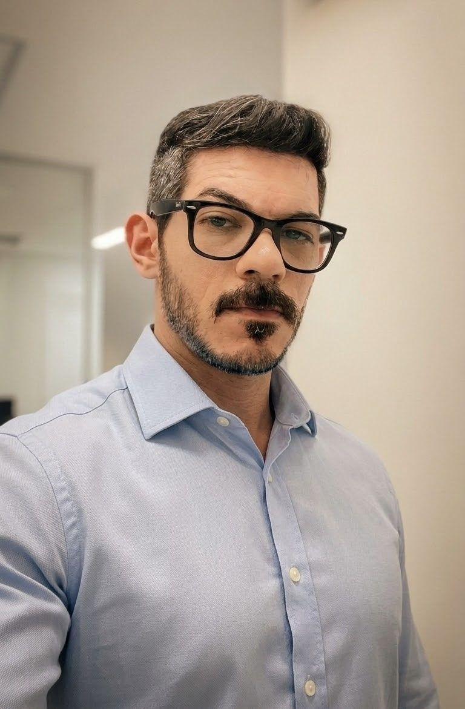
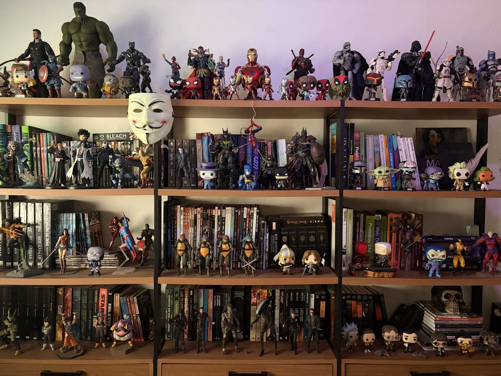
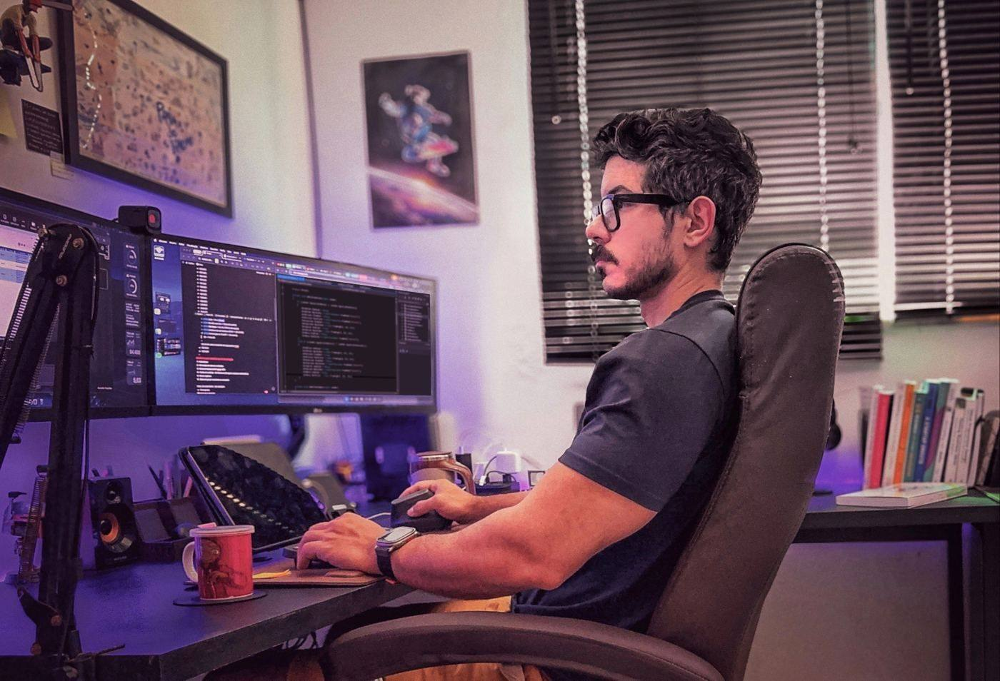
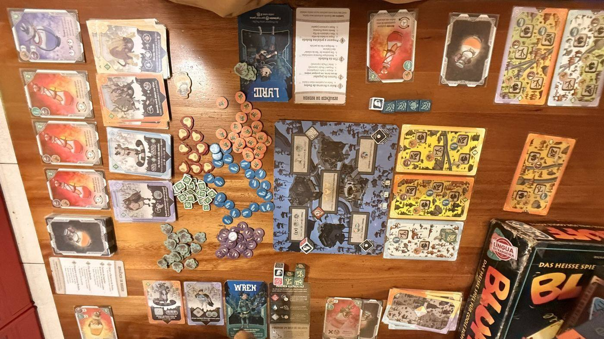
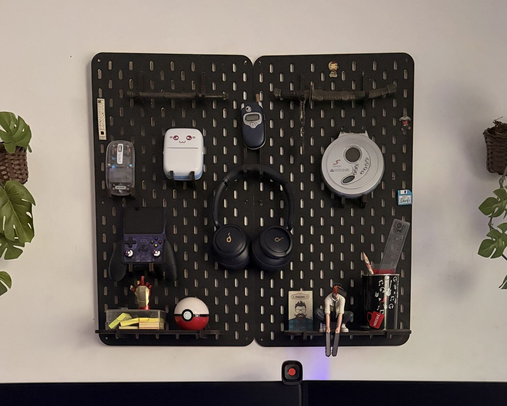
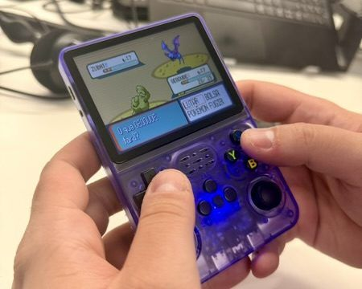
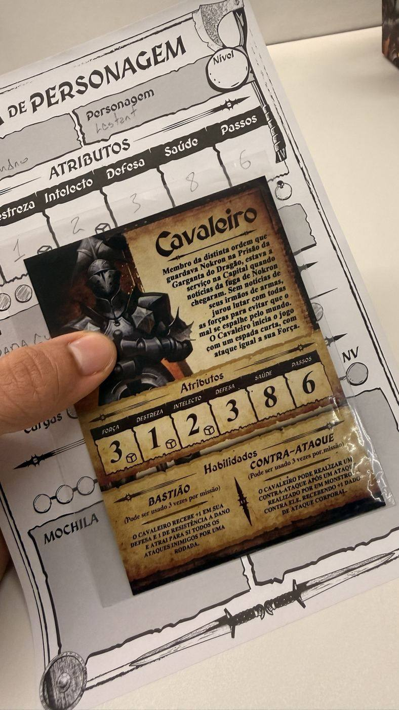

De ponta a ponta, da direção de arte ao produto.
Sou o Diéville, Product Designer sênior em Fortaleza. Sou designer há mais de 12 anos: comecei no design gráfico e na direção de arte e, há quatro anos e meio, trabalho com produto digital. Gosto do processo inteiro: entender o problema, decidir com o time, desenhar, acompanhar a entrega e medir. Passei por fintech, healthtech, agrotech, foodtech e investimentos, e é desse repertório, somado ao olhar visual da direção de arte, que vem a minha velocidade.

Quatro hábitos que levo para qualquer squad.
Entender antes de desenhar
Discovery proporcional ao risco: entrevistas, matriz CSD e jornada quando a dúvida é grande, uma conversa com o PO quando a decisão cabe em 24 horas.
Decidir e registrar
Cada decisão importante fica escrita com contexto, opções, motivo e um gatilho para reavaliar. Isso deixa o time mudar de ideia sem perder o histórico.
Montar a base que o time usa
Na Boavista, montei com o time o design system ligado ao código, o handoff com registro de decisões e trouxe documentação e medição de uso.
Validar com gente real
Protótipo testado com usuários antes de virar código. Quando o produto já está no ar, olho os dados de uso antes de abrir a próxima frente.
Eu decido. A IA executa.
Transformei o meu processo de design em instruções que uma IA consegue seguir, organizadas pelas fases do Double Diamond. A IA acelera pesquisa, mockups e código. As decisões de produto continuam comigo.
Nada sem mockup aprovado
Toda mudança de interface vira um mockup anotado, com opções lado a lado, e só é implementada depois da minha aprovação.
O The Watchlist
Um produto meu, construído com IA do banco à interface, e o lugar onde eu aprendi a parar de construir para pesquisar.
Da direção de arte ao único designer de cinco squads.
- 2025 · AGORABoavista · fintech
Senior Product Designer, único designer em 5 squads. Design system, handoff, documentação e a Jornada de Implantação.
- 2022 A 2025Quiker
Product Designer numa empresa de vários clientes, em agrotech, fintech, healthtech e investimentos: projetos para Vect.Ag, CEOX, Braile e Cory e ajustes pontuais para a Usina da Pedra.
- 2022GLIC · healthtech
Primeiro cargo de Product Designer, como júnior. Facilitei o alinhamento da liderança e um Design Sprint com o CEO na sala.
- 2021Whiletrue
Freela de UI numa plataforma gamificada de ensino para devs. Onde comecei em produto.
- Antes de 2021Design gráfico e direção de arte
Identidade, peças e direção visual. É daqui que vem o repertório visual que levo para produto.
Também acompanho quem está chegando.
Mentoro designers em início ou transição de carreira. Hoje acompanho uma pessoa, com encontros, materiais e metas combinadas no começo.
O que trabalhamos juntos: leitura de portfólio, processo de discovery, apresentação de cases, uso de IA no dia a dia e preparação para entrevistas.
Área do mentorado
Um espaço para cada pessoa mentorada acompanhar a jornada:
- Materiais e leituras de cada etapa
- Andamento e próximos passos
- Registro do que mudou a cada encontro
Quer conversar sobre mentoria? Me escreve.
Coleciono histórias.
Livros desde a adolescência, action figures há 12 anos e RPG com os amigos. Todo jogo bom é um sistema bem desenhado.







Este portfólio também é um produto.
Ele evolui como qualquer produto que eu desenho: com versões, testes e ajustes.
- v2.1 · nov 2026Primeira revisão depois de ir ao ar. Hero aparece na hora (a animação ficou só no rótulo), CV para baixar, aviso de cookies menor, menu mais curto e home sem repetir a trajetória. Na mesma semana: home com menos da metade do peso de imagens, rolagem sem encaixe automático, menu na mesma fonte dos botões, robô acenando pela frente, trajetória com o trecho atual em andamento, títulos de seção mais diretos e um controle de animações que mostra se está ligado ou desligado.
- v2.0 · nov 2026Saída do Framer para um site próprio. Home com a estante de cases, páginas de case em duas versões (pública e completa sob pedido), página Sobre e área do mentorado.
- v1 · FramerPortfólio em Framer, com os cases da Vect.Ag e da GLIC.